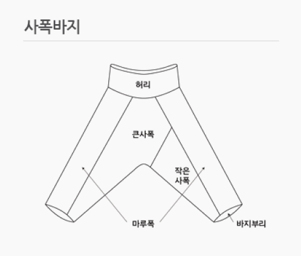

한복 규정
한복착용자 무료관람 가이드라인
(개정 2021.4.lo21. 문화재청 궁능유적본부 훈령 제20호)| 구분 | 내용 | |
|---|---|---|
| 일반 |
1. 전통한복, 생활한복 모두 무료관람 대상 포함
2. 상의(저고리)와 하의(치마, 바지)를 기본으로 함. 단, 두루마기만 걸친 경우에는 한복으로 인정하지 않으며, 상하의를 갖춰 입어야 함
*궁궐의 품격에 어울리는 한복 착용 권장 (과도한 노출 금지) |
|
| 세부 | 저고리 | 3. 여미는 깃 형태 유지 ( 고름, 매듭 방식은 관계 없음) |
| 바지 | 4. 사폭바지 형태에 준하는 바지  | |
| 치마 | 5. 통치마, 풀치마 등 형식 제한 없음 | |
개정 2021.04.21 문화재청 궁능유적본부 훈령 제20호
한복착용자 무료관람 Q&A
1. 한복의 범위는 어디까지 인가요?
전통한복과 생활한복 모두 한복으로 인정합니다.
2. 한저고리에 고름이 없는 경우도 한복으로 보나요?
네, 맞습니다.
여미는 깃 형태의 저고리는 고름이 없더라도 한복 저고리로 인정합니다.
3. 티셔츠 형태의 생활한복 저고리는 한복으로 인정하나요?
아닙니다.
티셔츠처럼 입는 형태의 생활한복 저고리는 한복 저고리로 인정하지 않습니다.
4. 한복 바지 허리춤 마감은 지퍼형태, 발목부분 대님이 없는데, 한복인가요?
네, 맞습니다.
한복바지의 경우, 형태를 기준으로 한복바지에 준하면(사폭바지 형태)한복으로 인정합니다.
5. 청바지에 저고리만 착용하거나, 한복 하의에 티셔츠를 입은 경우는 한복으로 인정하나요?
아닙니다. 여미는 깃의 저고리와 하의(치마, 바지)를 갖춘 경우 한복으로 인정합니다.
6. 관람객이 저고리 없이 원피스형 한복을 입고 왔는데, 한복으로 인정하나요?
아닙니다.
아닙니다. 여미는 깃의 저고리와 하의(치마, 바지)를 갖춘 경우 한복으로 인정합니다.
7. 관람객이 저고리에 허리치마를 입고 왔는데, 이것도 한복으로 인정하나요?
네, 맞습니다.
여미는 깃의 저고리와 치마를 착용한 경우 한복으로 인정합니다.
단, 저고리가 허리까지 내려와야 합니다.
8. 여름에 어르신들이 착용하는 모시옷도 한복인가요?
네, 맞습니다.
가이드라인에 준하는 경우 한복으로 인정합니다.
9. 외국인이 한복을 착용한 경우, 무료관람 대상인가요?
네, 맞습니다.
한복착용자 무료관람의 취지는 한복의 대중화 및 세계화이므로 내.외국인에 관계없이
무료관람 대상으로 인정합니다.